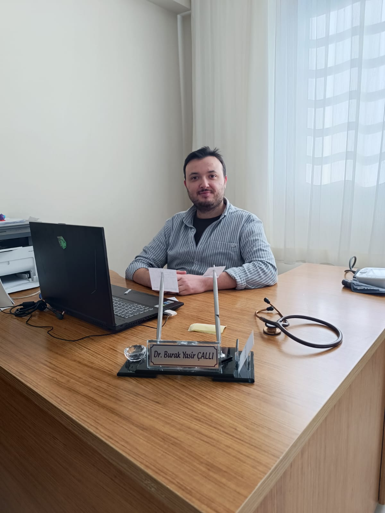

Hakkımızda
54 Nolu AHB
- Aile Hekimi: Dr. BURAK YASİR ÇALLI
- Sağlık Personeli: ÖZLEM ÇIBIKOĞLU
55 Nolu AHB

- Aile Hekimi: Dr. CEYDA UZUNOĞLU ALTAN
- Sağlık Personeli: EMİNE ASLAN
Sunulan Hizmetler
- Hizmetlerimiz Aile Sağlığı Merkezlerinde; birinci basamak teşhis ve tedavi edici sağlık hizmetleri ile ilgili poliklinik hizmeti, aşılamalar, bebek izlemleri, çocuk izlemleri, gebe ve lohusa izlemleri, 15 – 49 yaş kadın izlemleri, tarama programları, belli yaş gruplarına yönelik periyodik sağlık kontrolleri, ulusal hastalık kontrol programları gibi koruyucu sağlık hizmeti verilmektedir. Tütünle mücadele, obezitenin önlenmesi, diyabet, kalp ve damar hastalığı başta olmak üzere kronik hastalıkların önlenmesi ve erken tespiti gibi programlar koruyucu sağlık hizmeti kapsamında aile sağlığı merkezlerinde sunulmaktadır.
- Muayene Hizmetleri Aile Sağlığı Merkezimiz Manisa Salihli Keli mah. 818 sk no:10 adresinde hizmet vermektedir. Merkezimizde hastaların birinci basamak teşhis ve tedavi edici sağlık hizmetleri ile ilgili poliklinik hizmeti muayeneleri ve tedavileri yapılmaktadır.
- Laboratuar Hizmetleri
Aşağıdaki (kan ve idrar) laboratuvar tetkiklerinin istemi yapılabilir:
- Eliza – Hormon
- Biyokimya
- Hematoloji
- İdrar
- Bulaşıcı Hastalık taraması yapılmaktadır.
- Ana Çocuk Sağlığı Hizmetleri
Aile Sağlığı Merkezimizde;
- Hap, Kondom dağıtımı
- Güvenli Cinsel İlişki Danışmanlığı
- Emzirme Danışmanlığı
- Beslenme Danışmanlığı
- Aşı Hizmetleri
- Persantil takibi
- Gebelik Danışmanlığı
- Gebelikte Beslenme
- Doğum Öncesi ve Doğum Sonrası Danışmanlık
- Lohusa Bakım ve İzlem hizmetleri verilmektedir.
Çalışma Saatleri
Pazartesi - Salı - Perşembe: 08:00 - 17:00
Çarşamba - Cuma: 07:00 - 17:00
Cumartesi: Kapalı
Pazar: Kapalı
Esnek Mesai
Merkezimizde esnek mesai uygulaması bulunmamaktadır. Çalışma saatlerimiz düzenli olarak belirtilen saatler arasındadır.
Yardımcı Çalışanlar
54 ve 55 Nolu AHB
- Yardımcı Çalışanlar: AKİLE URSAVAŞ, SİBEL YAZICI
İl Sağlık Müdürlüğü İletişim
Adres: Akmescit, İzmir Cd. No: 291, 45010 Yunusemre/Manisa
Telefon: (0236) 238 38 86